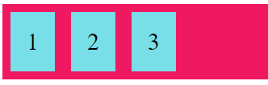

Um tipo de display que vale a pena ser reforçado e merece uma atenção especial é o display flex. Com ele é possível criar o que chamamos de flexbox.
O display: flex; irá afetar diretamente as children do elemento que for aplicado e não o elemento em si (que permanecerá como um bloco).
O que ele faz: distribui os elementos internos (children) de modo flexível por dentro do elemento parent.
O elemento abaixo mostra um container com display: flex; aplicado e agindo sobre suas children:
No HTML:
No CSS:
Junto com o display: flex; podemos aplicar outras propriedades que interagem com esta. Veja as principais:
flex-direction: column;
Define a direção dos elementos internos como coluna:
flex-direction: column-reverse;
Define a direção dos elementos internos como coluna, porém na ordem contrária:
flex-direction: row;
Define a direção dos elementos internos como linha:
flex-direction: row-reverse;
Define a direção dos elementos internos como linha, porém na ordem contrária:
justify-content
Usado para alinhar os flex-items (children do elemento que possui display: flex;). Alguns valores:
justify-content: center; centraliza os flex-items:
justify-content: flex-start; alinha os itens no começo do container (é a opção default do display flex):
justify-content: flex-end; alinha os itens ao final do container:

justify-content: space-around; distribui os itens com espaço antes, ao meio e depois das linhas:
justify-content: space-between; distribui os itens com espaço entre as linhas:
justify-content: space-evenly; distribui com espaços iguais entre eles e as extremidades do container:
align-items
Usado para alinhar os flex-items (children do elemento que possui display: flex;) verticalmente. Nos exemplos a seguir a altura dos elementos foi alterada para melhor ilustrar essa propriedade. Alguns valores:
align-items: center; centraliza os flex-items no meio do container:

align-items: flex-start; alinha os flex-items no topo do container:
align-items: flex-end; alinha os flex-items na base do container:
align-items: stretch; “estica” os flex-items (desde que não possuam uma altura fixa) para preencher o container:
align-items: baseline; alinha os flex-items de acordo com a base do texto que eles contêm:
flex-wrap
Especifica se a linha dos flex-items irá “quebrar” ao atingir a largura máxima do container. Alguns valores:
flex-wrap: wrap; “quebra” a linha se necessário:
flex-wrap: nowrap; não “quebra” a linha se necessário. Caso os itens tenham largura fixa, irão ultrapassar o container, se não tiverem, poderão “encolher” para caber no container. No caso abaixo, o texto dentro dos itens “força” uma largura mínima, fazendo os itens ultrapassarem o limite do container:
flex-wrap: wrap-reverse; “quebra” a linha se necessário, na direção contrária:
flex-flow
É uma propriedade “atalho” que especifica tanto a flex-direction quanto a flex-wrap. Exemplo:
align-content
Usada para alinhar as linhas de itens de um flex box (como as linhas criadas ao colocarmos flex-wrap: wrap;). Alguns valores:
align-content: center; centraliza as linhas dos flex-items em relação ao container:
align-content: flex-start; alinha as linhas dos itens no começo do container:
align-content: flex-end; alinha as linhas dos itens ao final do container:
align-content: space-around; distribui as linhas com espaço antes, ao meio e depois das linhas:
align-content: space-between; distribui as linhas com espaço entre elas:
align-content: space-evenly; distribui as linhas com espaços iguais entre elas e as extremidades do container:
align-content: stretch; “estica” os flex-items (desde que não possuam uma altura fixa) para preencher a altura da linha, preenchendo assim o container:
Essas são as características principais do flex-box – aliás muito útil no dia a dia. Dentro do flex-box existem os flex-items (nos exemplos acima os retângulos azuis com os números dentro) são flexíveis e também possuem propriedades próprias. Elas são:
Order: define a ordem dos itens dentro do flexbox. Por exemplo:
flex-grow e flex-shrink: como o item dentro de um flex-box torna-se flexível se não tiver medidas declaradas fixas, ele pode tanto crescer (em inglês, grow) ou encolher (em inglês, shrink). As propriedades flex-grow (crescimento) e flex-shrink (encolhimento) definem quanto um item pode crescer ou encolher em relação aos outros. Exemplos:
No exemplo acima todos os itens estão com uma largura em porcentagem, encolhendo para caber no container, menos o item número 2, que apresenta um flex-shrink de 0, logo acaba não encolhendo, enquanto o item 5 apresenta flex-shrink de 2, encolhendo levemente.
align-self: com essa propriedade aplicada a um item, é possível sobrepor o align-itens do flexbox para alinhar o item específico da forma especificada. No exemplo abaixo temos um flexbox com align-items: stretch; e o item 3 com align-self: center;. Veja como fica: